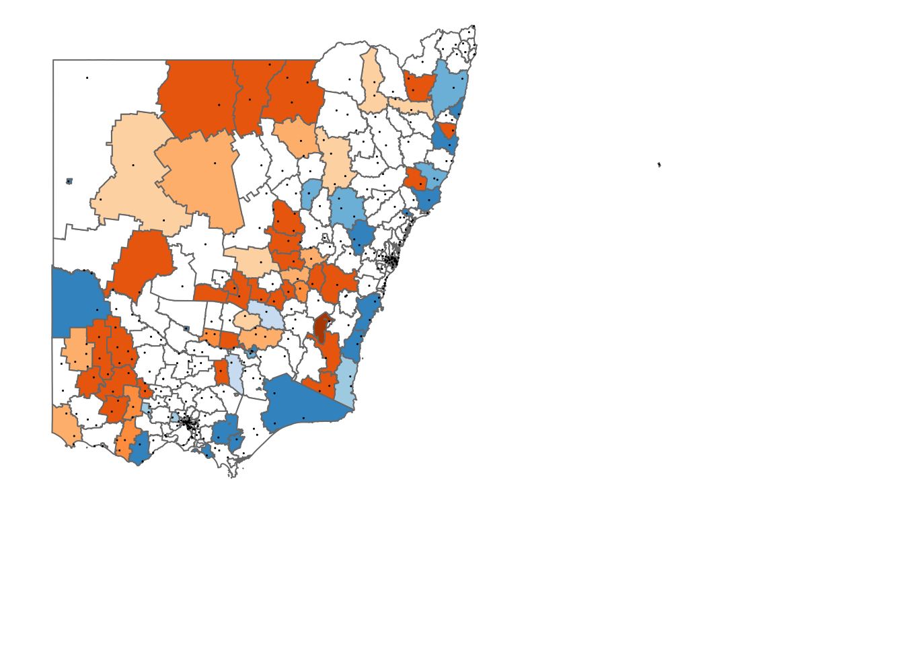
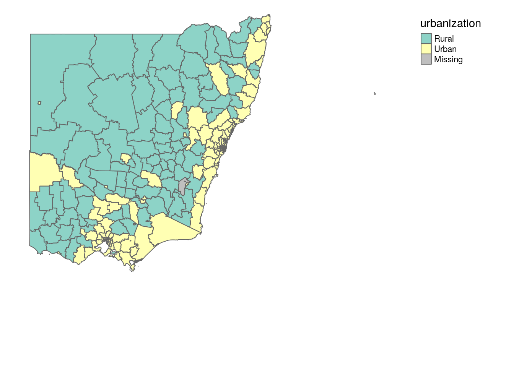
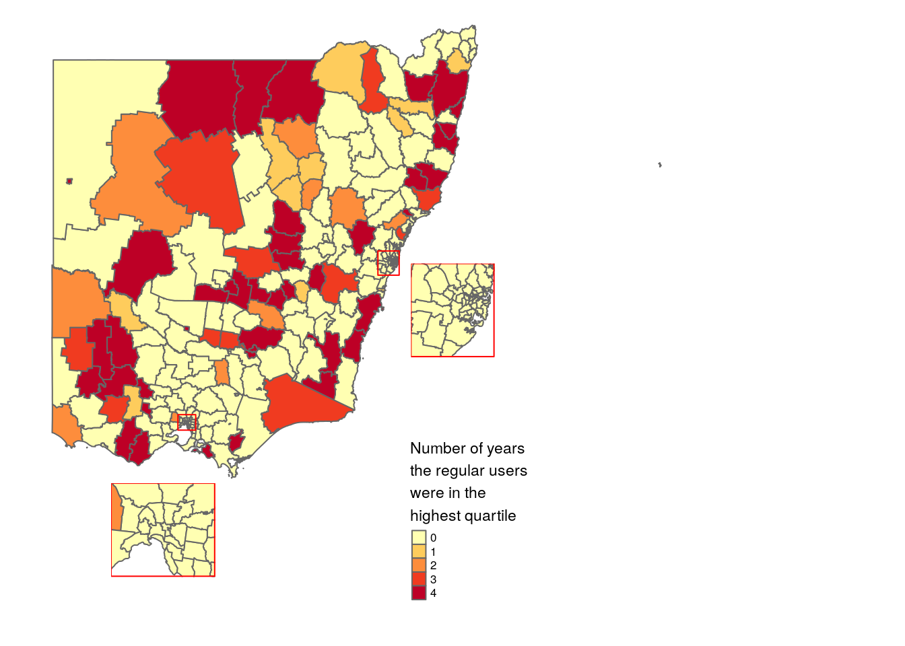
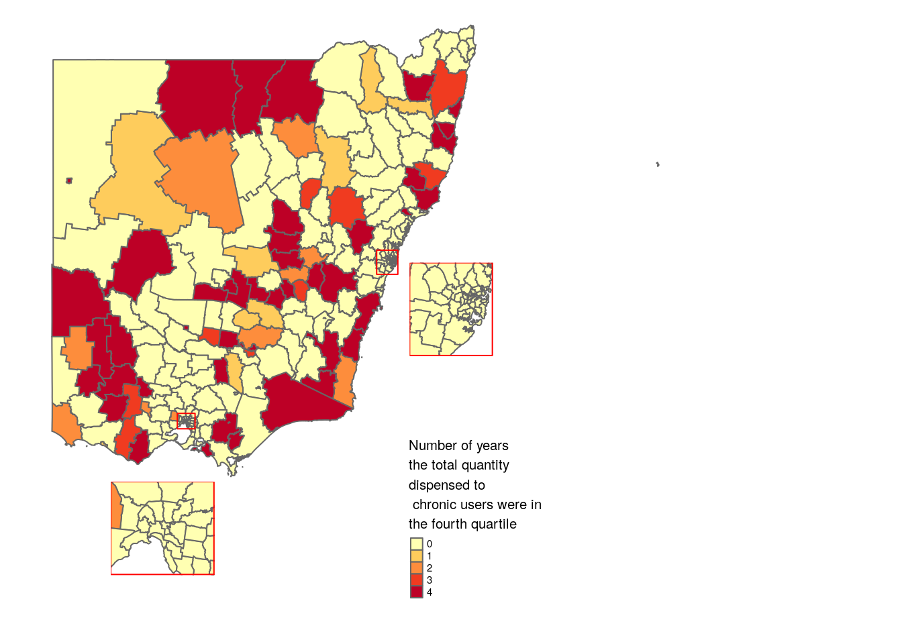
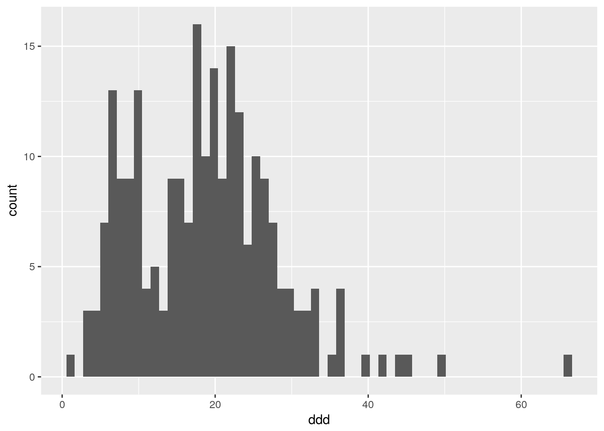
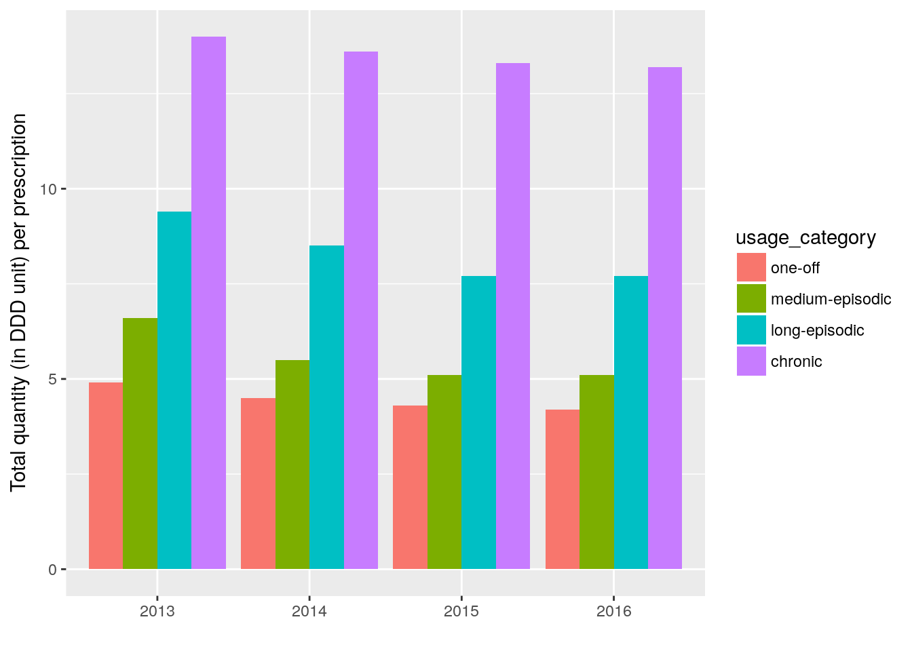

Last updated: 2018-10-08
workflowr checks: (Click a bullet for more information) ✔ R Markdown file: up-to-date
Great! Since the R Markdown file has been committed to the Git repository, you know the exact version of the code that produced these results.
✔ Environment: empty
Great job! The global environment was empty. Objects defined in the global environment can affect the analysis in your R Markdown file in unknown ways. For reproduciblity it’s best to always run the code in an empty environment.
✔ Seed:
set.seed(20180713)
The command set.seed(20180713) was run prior to running the code in the R Markdown file. Setting a seed ensures that any results that rely on randomness, e.g. subsampling or permutations, are reproducible.
✔ Session information: recorded
Great job! Recording the operating system, R version, and package versions is critical for reproducibility.
✔ Repository version: 3fa5149
wflow_publish or wflow_git_commit). workflowr only checks the R Markdown file, but you know if there are other scripts or data files that it depends on. Below is the status of the Git repository when the results were generated:
Ignored files:
Ignored: analysis/.Rhistory
Ignored: analysis/hypothesis1_cache/
Ignored: cache/
Ignored: data/
Unstaged changes:
Modified: analysis/check2018-1005.Rmd
This is workflowr version 1.1.1
Run ?workflowr for help getting startedLoading required package: wraprLoading required package: data.table
Attaching package: 'data.table'The following object is masked from 'package:wrapr':
:=Loading required package: seasLoading required package: MASSLoading required package: magrittrLoading required package: stringrLoading required package: broomLoading required package: knitrLoading required package: kableExtraLoading required package: panderLoading required package: lubridate
Attaching package: 'lubridate'The following objects are masked from 'package:data.table':
hour, isoweek, mday, minute, month, quarter, second, wday, week, yday, yearThe following object is masked from 'package:base':
dateLoading required package: tmapLoading required package: tmaptoolsLoading required package: gridLoading required package: readstata13Loading required package: foreignLoading required package: ordinalLoading required package: DataCache
Attaching package: 'DataCache'The following object is masked from 'package:lubridate':
nowLoading required package: shiny
Attaching package: 'shiny'The following object is masked from 'package:pander':
pLoading required package: tidyverse── Attaching packages ─────────────────────────────────────────────────────────────────────────────────────────────────────────────────────────────────────────────────────────────── tidyverse 1.2.1 ──✔ ggplot2 2.2.1 ✔ readr 1.1.1
✔ tibble 1.4.2 ✔ purrr 0.2.5
✔ tidyr 0.8.1 ✔ dplyr 0.7.6
✔ ggplot2 2.2.1 ✔ forcats 0.3.0── Conflicts ────────────────────────────────────────────────────────────────────────────────────────────────────────────────────────────────────────────────────────────────── tidyverse_conflicts() ──
✖ lubridate::as.difftime() masks base::as.difftime()
✖ dplyr::between() masks data.table::between()
✖ dplyr::coalesce() masks wrapr::coalesce()
✖ lubridate::date() masks base::date()
✖ tidyr::extract() masks magrittr::extract()
✖ dplyr::filter() masks stats::filter()
✖ dplyr::first() masks data.table::first()
✖ lubridate::hour() masks data.table::hour()
✖ lubridate::intersect() masks base::intersect()
✖ lubridate::isoweek() masks data.table::isoweek()
✖ dplyr::lag() masks stats::lag()
✖ dplyr::last() masks data.table::last()
✖ lubridate::mday() masks data.table::mday()
✖ lubridate::minute() masks data.table::minute()
✖ lubridate::month() masks data.table::month()
✖ DataCache::now() masks lubridate::now()
✖ lubridate::quarter() masks data.table::quarter()
✖ lubridate::second() masks data.table::second()
✖ dplyr::select() masks MASS::select()
✖ purrr::set_names() masks magrittr::set_names()
✖ lubridate::setdiff() masks base::setdiff()
✖ dplyr::slice() masks ordinal::slice()
✖ purrr::transpose() masks data.table::transpose()
✖ lubridate::union() masks base::union()
✖ lubridate::wday() masks data.table::wday()
✖ lubridate::week() masks data.table::week()
✖ lubridate::yday() masks data.table::yday()
✖ lubridate::year() masks data.table::year()Loading required package: RPostgreSQLLoading required package: DBILoading required package: keyringLoading more recent data, returning lastest available.Loading required package: spmaps - now need to generate mapdata
lgas in 4th quartile of dispensing - Figure 3
df %>%
count( type_name, ddd_mg_factor ) # A tibble: 13 x 3
type_name ddd_mg_factor n
<chr> <dbl> <int>
1 Bupre 1.2 305053
2 Fentanyl 0.6 786
3 Fentanyl 1.2 137808
4 Hydromorphone 4 3234
5 Hydromorphone 20 30253
6 Methadone 25 14316
7 Morphine 30 24248
8 Morphine 100 92753
9 Oxycodone and Oxy+Nalox 30 807
10 Oxycodone and Oxy+Nalox 75 1143715
11 Para_Codeine 100 758182
12 Tapentadol 400 35348
13 Tramadol 300 477753df_population %>%
distinct( lga )# A tibble: 235 x 1
lga
<fct>
1 10050
2 10110
3 10150
4 10200
5 10250
6 10300
7 10350
8 10470
9 10550
10 10600
# ... with 225 more rowsdf_population %>%
group_by(supply_year, state) %>%
summarise( sum( population ))# A tibble: 10 x 3
# Groups: supply_year [?]
supply_year state `sum(population)`
<fct> <chr> <dbl>
1 2012 NSW 7307183
2 2012 VIC 5653429
3 2013 NSW 7407063
4 2013 VIC 5775808
5 2014 NSW 7513418
6 2014 VIC 5901970
7 2015 NSW 7617684
8 2015 VIC 6032968
9 2016 NSW 7720791
10 2016 VIC 6179249df %>%
select_and_standardise_ddd ( standardise_over=qw('lga supply_year') ) %>%
group_by( supply_year ) %>%
mutate( quartile = cut( ddd, quantile( ddd), labels=1:4 ) )%>%
ungroup() %>%
filter( quartile=='4') %>%
count( lga ) %>%
{ . } -> df_lgas_in_fourth_quartileWarning: Column `lga` joining character vector and factor, coercing into character vectorWarning: Column `sex` joining character vector and factor, coercing into character vectorWarning: Column `supply_year` joining factors with different levels, coercing to character vectorWarning: Column `sex` joining character vector and factor, coercing into character vectordf_lgas_in_fourth_quartile %>%
count( n ) %>%
rename( years_in_fourth_quartile = n, count_lga = nn)# A tibble: 4 x 2
years_in_fourth_quartile count_lga
<int> <int>
1 1 11
2 2 10
3 3 11
4 4 42 df_population %>%
distinct( lga,state) %>%
inner_join( df_lgas_in_fourth_quartile ) %>%
count( state)Joining, by = "lga"Warning: Column `lga` joining factor and character vector, coercing into character vector# A tibble: 2 x 2
state nn
<chr> <int>
1 NSW 54
2 VIC 20lgas in 4th quartile of dispensing for chronic users - Figure 4
df %>%
inner_join( df_patient_usage ) %>%
filter( usage_category =='chronic') %>%
select_and_standardise_ddd ( standardise_over=qw('lga supply_year') ) %>%
group_by( supply_year ) %>%
mutate( quartile = cut( ddd, quantile( ddd), labels=1:4 ) )%>%
ungroup() %>%
filter( quartile=='4') %>%
count( lga ) %>%
{ . } -> df_chronic_lgas_in_fourth_quartileJoining, by = "pin"Warning: Column `lga` joining character vector and factor, coercing into character vectorWarning: Column `sex` joining character vector and factor, coercing into character vectorWarning: Column `supply_year` joining factors with different levels, coercing to character vectorWarning: Column `sex` joining character vector and factor, coercing into character vectordf_chronic_lgas_in_fourth_quartile %>%
count( n ) %>%
rename( years_in_fourth_quartile = n, count_lga = nn)# A tibble: 4 x 2
years_in_fourth_quartile count_lga
<int> <int>
1 1 9
2 2 10
3 3 9
4 4 44df_population %>%
distinct( lga,state) %>%
inner_join( df_chronic_lgas_in_fourth_quartile ) %>%
count( state)Joining, by = "lga"Warning: Column `lga` joining factor and character vector, coercing into character vector# A tibble: 2 x 2
state nn
<chr> <int>
1 NSW 50
2 VIC 22library( jsonlite)
Attaching package: 'jsonlite'The following object is masked from 'package:purrr':
flattenThe following object is masked from 'package:shiny':
validatelibrary(sf)Linking to GEOS 3.5.1, GDAL 2.2.1, proj.4 4.9.3df_hospital = fromJSON('https://www.myhospitals.gov.au/api/hospitals') %>%
as.tibble()
df_hospital %>%
filter( str_to_upper( state ) %in% c('NSW','VIC') &
!isClosed ) %>%
mutate( latitude = as.numeric( latitude), longitude = as.numeric( longitude)) %>%
{ . } -> df_hospital
df_hospital_sf = st_as_sf(df_hospital, coords = c("longitude", "latitude"),
crs = 4326, agr = "constant")
df_chronic_lgas_in_fourth_quartile %>%
inner_join( df_population %>% distinct( lga, urbanization )) %>%
mutate( value = ifelse( is.na(n), 0, n )) %>%
select( lga, value, urbanization ) %>%
rbind( data.frame( lga=c(89399), value=0, urbanization='Urban')) %>%
mutate( value=as.ordered(value)) %>%
select( lga, value, urbanization ) %>%
append_data( base_map,
.,
key.shp="LGA_CODE11",
key.data="lga"
) %>%
{.} -> df_mapJoining, by = "lga"Warning: Column `lga` joining character vector and factor, coercing into character vectorUnder coverage: 161 out of 234 shape features did not get appended data. Run under_coverage() to get the corresponding feature id numbers and key values.map_color_set_1= RColorBrewer::brewer.pal(6, "Oranges")[2:6]
map_color_set_2= RColorBrewer::brewer.pal(6, "Blues")[2:6]
df_map %>%
mutate( value=as.numeric( value),
value = as.ordered( ifelse( urbanization == 'Urban', value+5,value))) %>%
tm_shape( ) +
tm_polygons( "value",
palette = c( map_color_set_1 , map_color_set_2),
showNA=FALSE,
colorNA='#FFFFFF'
) +
tm_layout(frame=FALSE,
legend.position = c("right", "top"), bg.color="#FFFFFF",
inner.margins = c(.25,.02,.02,.25), # how far in from the bottom and right side (for insets)
legend.show=FALSE) +
tm_shape( df_hospital_sf ) +
tm_symbols(col = "black", size = .001, shape=4) 
| Version | Author | Date |
|---|---|---|
| 3fa5149 | Dennis Wollersheim | 2018-10-08 |
df_population %>%
distinct( lga, urbanization ) %>%
append_data( base_map,
.,
key.shp="LGA_CODE11",
key.data="lga"
) %>%
tm_shape( ) +
tm_polygons( "urbanization",
) +
tm_layout(frame=FALSE,
legend.position = c("right", "top"), bg.color="#FFFFFF",
inner.margins = c(.25,.02,.02,.25) )Under coverage: 1 out of 234 shape features did not get appended data. Run under_coverage() to get the corresponding feature id numbers and key values.Over coverage: 2 out of 235 data records were not appended. Run over_coverage() to get the corresponding data row numbers and key values.
| Version | Author | Date |
|---|---|---|
| 3fa5149 | Dennis Wollersheim | 2018-10-08 |
df_lgas_in_fourth_quartile %>%
rename( Value = n ) %>%
printMap( title = "Number of years\nthe regular users\nwere in the\nhighest quartile",
filename = '/tmp/regular.png' )Joining, by = "lga"Warning: Column `lga` joining character vector and factor, coercing into character vectorOver coverage: 2 out of 236 data records were not appended. Run over_coverage() to get the corresponding data row numbers and key values.Map saved to /tmp/regular.pngResolution: 3000 by 2200 pixelsSize: 10 by 7.333333 inches (300 dpi)
| Version | Author | Date |
|---|---|---|
| 3fa5149 | Dennis Wollersheim | 2018-10-08 |
df_chronic_lgas_in_fourth_quartile %>%
rename( Value = n ) %>%
printMap( title = "Number of years\nthe total quantity\ndispensed to \n chronic users were in\nthe fourth quartile",
filename = '/tmp/fourthQuartile.png' )Joining, by = "lga"Warning: Column `lga` joining character vector and factor, coercing into character vectorOver coverage: 2 out of 236 data records were not appended. Run over_coverage() to get the corresponding data row numbers and key values.Map saved to /tmp/fourthQuartile.pngResolution: 3000 by 2200 pixelsSize: 10 by 7.333333 inches (300 dpi)
| Version | Author | Date |
|---|---|---|
| 3fa5149 | Dennis Wollersheim | 2018-10-08 |
% for each usage category
df_patient_usage %>%
count( usage_category ) %>%
mutate( pct = round( n/sum(n) * 100,2 )) %>%
kable()| usage_category | n | pct |
|---|---|---|
| one-off | 197775 | 52.69 |
| medium-episodic | 140084 | 37.32 |
| long-episodic | 18713 | 4.99 |
| chronic | 18792 | 5.01 |
df_patient %>%
count( sex ) %>%
mutate( pct = round( n/sum(n) * 100,2 )) %>%
kable()| sex | n | pct |
|---|---|---|
| F | 200875 | 53.51 |
| M | 174489 | 46.49 |
drug type by number of people and drug type
df %>%
distinct( type_name, pin ) %>%
count( type_name ) %>%
mutate( pct = round( n/sum(n) * 100,2 )) %>%
kable()| type_name | n | pct |
|---|---|---|
| Bupre | 23086 | 4.16 |
| Fentanyl | 9546 | 1.72 |
| Hydromorphone | 3084 | 0.56 |
| Methadone | 769 | 0.14 |
| Morphine | 15221 | 2.75 |
| Oxycodone and Oxy+Nalox | 173730 | 31.33 |
| Para_Codeine | 249938 | 45.08 |
| Tapentadol | 6666 | 1.20 |
| Tramadol | 72451 | 13.07 |
df %>%
select_and_standardise_ddd ( standardise_over=qw('state type_name') , join_with=qw('supply_year') ) %>%
count( type_name ) %>%
mutate( pct = round( n/sum(n) * 100,2 )) %>%
kable()Warning: Column `sex` joining character vector and factor, coercing into character vectorWarning: Column `supply_year` joining factors with different levels, coercing to character vectorWarning: Column `sex` joining character vector and factor, coercing into character vectorWarning: Column `supply_year` joining character vector and factor, coercing into character vector
Warning: Column `supply_year` joining character vector and factor, coercing into character vector| type_name | n | pct |
|---|---|---|
| Bupre | 8 | 11.43 |
| Fentanyl | 8 | 11.43 |
| Hydromorphone | 8 | 11.43 |
| Methadone | 8 | 11.43 |
| Morphine | 8 | 11.43 |
| Oxycodone and Oxy+Nalox | 8 | 11.43 |
| Para_Codeine | 8 | 11.43 |
| Tapentadol | 6 | 8.57 |
| Tramadol | 8 | 11.43 |
DDD/1000 by drug type standardised
df %>%
select_and_standardise_ddd ( standardise_over=qw('state type_name') , join_with=qw('supply_year') ) %>%
filter( supply_year == '2016') %>%
select( -supply_year) %>%
spread( state, ddd) %>%
kable()Warning: Column `sex` joining character vector and factor, coercing into character vectorWarning: Column `supply_year` joining factors with different levels, coercing to character vectorWarning: Column `sex` joining character vector and factor, coercing into character vectorWarning: Column `supply_year` joining character vector and factor, coercing into character vector
Warning: Column `supply_year` joining character vector and factor, coercing into character vector| type_name | NSW | VIC |
|---|---|---|
| Bupre | 0.5817052 | 0.7340719 |
| Fentanyl | 1.1774106 | 0.8062729 |
| Hydromorphone | 0.3447852 | 0.4179510 |
| Methadone | 0.2398462 | 0.2087138 |
| Morphine | 0.6577799 | 0.7745479 |
| Oxycodone and Oxy+Nalox | 3.4783417 | 3.0766922 |
| Para_Codeine | 5.0913249 | 5.2511292 |
| Tapentadol | 0.3816841 | 0.4072286 |
| Tramadol | 2.3613040 | 2.6143756 |
mean doses by cateogry
df %>%
inner_join( df_patient_usage ) %>%
group_by( usage_category ) %>%
summarise( round( mean( n_dose ), 1 )) %>%
kable()Joining, by = "pin"| usage_category | round(mean(n_dose), 1) |
|---|---|
| one-off | 4.5 |
| medium-episodic | 5.6 |
| long-episodic | 8.3 |
| chronic | 13.5 |
mean doses by seifa
df %>%
inner_join( df_population %>% distinct( lga, seifa )) %>%
group_by( seifa ) %>%
summarise( n_dose = round( mean( n_dose ),1) ) %>%
kable()Joining, by = "lga"Warning: Column `lga` joining character vector and factor, coercing into character vector| seifa | n_dose |
|---|---|
| Least | 10.5 |
| Moderate | 10.3 |
| High | 10.3 |
| Very High | 8.4 |
| NA | 3.9 |
Avg ddd / lga ; and bootstrapped confidence intervals
library(rcompanion)
df %>%
select_and_standardise_ddd ( standardise_over=qw('lga') ) %>%
ggplot( aes( ddd, group=1) ) + geom_histogram(bins=60)Warning: Column `lga` joining character vector and factor, coercing into character vectorWarning: Column `sex` joining character vector and factor, coercing into character vectorWarning: Column `supply_year` joining factors with different levels, coercing to character vectorWarning: Column `sex` joining character vector and factor, coercing into character vector
| Version | Author | Date |
|---|---|---|
| 3fa5149 | Dennis Wollersheim | 2018-10-08 |
df %>%
select_and_standardise_ddd ( standardise_over=qw('lga') ) %>%
groupwiseGeometric( ddd ~ 1, ., conf = 0.95,
digits = 6,
R = 10000,
boot = TRUE,
traditional = FALSE,
normal = FALSE,
basic = FALSE,
percentile = FALSE,
bca = TRUE )Warning: Column `lga` joining character vector and factor, coercing into character vector
Warning: Column `sex` joining character vector and factor, coercing into character vectorWarning: Column `supply_year` joining factors with different levels, coercing to character vectorWarning: Column `sex` joining character vector and factor, coercing into character vector .id n Geo.mean sd.lower sd.upper se.lower se.upper ci.lower ci.upper
1 <NA> 232 16.2173 9.02361 29.1457 15.6049 16.8536 15.0329 17.4949df %>%
select_and_standardise_ddd ( standardise_over=qw('lga') ) %$%
t.test( ddd )Warning: Column `lga` joining character vector and factor, coercing into character vector
Warning: Column `sex` joining character vector and factor, coercing into character vectorWarning: Column `supply_year` joining factors with different levels, coercing to character vectorWarning: Column `sex` joining character vector and factor, coercing into character vector
One Sample t-test
data: ddd
t = 30.398, df = 231, p-value < 2.2e-16
alternative hypothesis: true mean is not equal to 0
95 percent confidence interval:
17.55011 19.98287
sample estimates:
mean of x
18.76649 df %>%
select_and_standardise_ddd ( standardise_over=qw('lga') ) %>%
summarise( se = sd( ddd ) / sqrt( length(ddd)))Warning: Column `lga` joining character vector and factor, coercing into character vector
Warning: Column `sex` joining character vector and factor, coercing into character vectorWarning: Column `supply_year` joining factors with different levels, coercing to character vectorWarning: Column `sex` joining character vector and factor, coercing into character vector# A tibble: 1 x 1
se
<dbl>
1 0.617df %>%
select_and_standardise_ddd ( standardise_over=qw('lga') ) %>%
summarise( mean( ddd ), max(ddd), min(ddd))Warning: Column `lga` joining character vector and factor, coercing into character vector
Warning: Column `sex` joining character vector and factor, coercing into character vectorWarning: Column `supply_year` joining factors with different levels, coercing to character vectorWarning: Column `sex` joining character vector and factor, coercing into character vector# A tibble: 1 x 3
`mean(ddd)` `max(ddd)` `min(ddd)`
<dbl> <dbl> <dbl>
1 18.8 66.2 1.20library(haven)
library(lme4)Loading required package: Matrix
Attaching package: 'Matrix'The following object is masked from 'package:tidyr':
expand
Attaching package: 'lme4'The following objects are masked from 'package:ordinal':
ranef, VarCorrdf_population %>%
distinct( lga, seifa, urbanization ) %>%
{ . } -> df_lga
df %>%
distinct( pin, quarter, supply_year) %>%
count( pin, supply_year ) %>%
inner_join( df_patient ) %>%
inner_join( df_lga ) %>%
mutate( supply_year = as.ordered( supply_year )) %>%
glmer( n~ sex+age+supply_year+seifa+urbanization + (1|state/lga), data=.) %>%
{ . } -> modelJoining, by = "pin"Joining, by = "lga"Warning: Column `lga` joining character vector and factor, coercing into character vectorWarning in glmer(n ~ sex + age + supply_year + seifa + urbanization + (1 | : calling glmer() with family=gaussian (identity link) as a shortcut to lmer() is deprecated; please call lmer() directlysummary(model)Linear mixed model fit by REML ['lmerMod']
Formula: n ~ sex + age + supply_year + seifa + urbanization + (1 | state/lga)
Data: .
REML criterion at convergence: 1769570
Scaled residuals:
Min 1Q Median 3Q Max
-1.4059 -0.7112 -0.3329 0.3978 3.0859
Random effects:
Groups Name Variance Std.Dev.
lga:state (Intercept) 0.0078705 0.08872
state (Intercept) 0.0002779 0.01667
Residual 1.0400227 1.01982
Number of obs: 614817, groups: lga:state, 231; state, 2
Fixed effects:
Estimate Std. Error t value
(Intercept) 1.2439110 0.0179464 69.313
sexM -0.1049378 0.0026203 -40.048
age20-44 0.2501137 0.0075957 32.928
age45-64 0.6056132 0.0076054 79.630
age65+ 0.9278921 0.0076057 122.000
supply_year.L 0.0268388 0.0026125 10.273
supply_year.Q -0.0012260 0.0026026 -0.471
supply_year.C 0.0008228 0.0025933 0.317
seifa.L -0.1606442 0.0135847 -11.825
seifa.Q -0.0459195 0.0127020 -3.615
seifa.C -0.0078327 0.0126930 -0.617
urbanizationUrban -0.0729705 0.0144220 -5.060
Correlation of Fixed Effects:
(Intr) sexM a20-44 a45-64 age65+ spp_.L spp_.Q spp_.C seif.L seif.Q seif.C
sexM -0.073
age20-44 -0.383 0.014
age45-64 -0.384 0.004 0.908
age65+ -0.386 0.022 0.908 0.908
supply_yr.L -0.008 0.000 0.012 0.014 0.017
supply_yr.Q 0.001 0.001 0.000 -0.001 -0.001 -0.023
supply_yr.C -0.001 0.000 0.002 0.002 0.002 0.005 -0.016
seifa.L 0.184 0.002 0.001 0.003 0.002 -0.001 0.000 0.000
seifa.Q 0.048 0.000 0.001 0.000 0.000 0.000 0.001 0.001 0.002
seifa.C 0.005 0.000 -0.001 -0.001 -0.002 0.000 0.000 0.000 0.001 -0.012
urbnztnUrbn -0.524 0.002 -0.004 -0.001 -0.001 0.000 0.000 0.001 -0.375 -0.098 -0.017mean doses by # quarters using
df%>%
inner_join( df_patient_usage ) %>%
group_by( usage_category, supply_year ) %>%
summarise( n_dose = round( mean( n_dose ),1) ) %>%
ggplot( aes( x=supply_year, y=n_dose, fill=usage_category ) )+
geom_col( position='dodge') +
ylab( "Total quantity (in DDD unit) per prescription" ) +
xlab('')Joining, by = "pin"
| Version | Author | Date |
|---|---|---|
| 3fa5149 | Dennis Wollersheim | 2018-10-08 |
ddd / year (standardised) for each year by user_type
df %>%
inner_join( df_patient_usage ) %>%
select_and_standardise_ddd ( standardise_over=qw('state usage_category supply_year') , join_with=qw('supply_year') ) %>%
mutate( ddd = round(ddd, 2 ), u_s = paste( usage_category, state)) %>%
select(-state, -usage_category) %>%
group_by( u_s, supply_year ) %>%
summarise( ddd=sum(ddd)) %>%
spread( u_s, ddd) %>%
kable()Joining, by = "pin"Warning: Column `sex` joining character vector and factor, coercing into character vectorWarning: Column `supply_year` joining factors with different levels, coercing to character vectorWarning: Column `sex` joining character vector and factor, coercing into character vectorWarning: Column `supply_year` joining character vector and factor, coercing into character vector
Warning: Column `supply_year` joining character vector and factor, coercing into character vector| supply_year | chronic NSW | chronic VIC | long-episodic NSW | long-episodic VIC | medium-episodic NSW | medium-episodic VIC | one-off NSW | one-off VIC |
|---|---|---|---|---|---|---|---|---|
| 2013 | 9.55 | 9.84 | 2.19 | 2.12 | 2.75 | 2.67 | 0.64 | 0.66 |
| 2014 | 10.30 | 10.39 | 2.42 | 2.26 | 1.97 | 1.99 | 0.55 | 0.55 |
| 2015 | 10.40 | 10.38 | 2.26 | 2.21 | 1.84 | 1.85 | 0.55 | 0.55 |
| 2016 | 9.47 | 9.46 | 2.09 | 2.00 | 2.15 | 2.25 | 0.60 | 0.59 |
df %>%
inner_join( df_patient_usage ) %>%
select_and_standardise_ddd ( standardise_over=qw('state usage_category') , join_with=qw('supply_year') ) %>%
mutate( ddd = round(ddd, 2 ), u_s = paste( usage_category, state)) %>%
select(-state, -usage_category) %>%
group_by( u_s ) %>%
summarise( ddd=sum(ddd)) %>%
spread( u_s, ddd) %>%
kable()Joining, by = "pin"Warning: Column `sex` joining character vector and factor, coercing into character vectorWarning: Column `supply_year` joining factors with different levels, coercing to character vectorWarning: Column `sex` joining character vector and factor, coercing into character vectorWarning: Column `supply_year` joining character vector and factor, coercing into character vector
Warning: Column `supply_year` joining character vector and factor, coercing into character vector| chronic NSW | chronic VIC | long-episodic NSW | long-episodic VIC | medium-episodic NSW | medium-episodic VIC | one-off NSW | one-off VIC |
|---|---|---|---|---|---|---|---|
| 39.72 | 40.07 | 8.96 | 8.59 | 8.71 | 8.76 | 2.34 | 2.35 |
df %>%
inner_join( df_patient_usage ) %>%
select_and_standardise_ddd ( standardise_over=qw('state') , join_with=qw('supply_year') ) %>%
mutate( ddd = round(ddd, 2 )) %>%
spread( state, ddd) %>%
kable()Joining, by = "pin"Warning: Column `sex` joining character vector and factor, coercing into character vectorWarning: Column `supply_year` joining factors with different levels, coercing to character vectorWarning: Column `sex` joining character vector and factor, coercing into character vectorWarning: Column `supply_year` joining character vector and factor, coercing into character vector
Warning: Column `supply_year` joining character vector and factor, coercing into character vector| supply_year | NSW | VIC |
|---|---|---|
| 2013 | 15.13 | 15.30 |
| 2014 | 15.24 | 15.19 |
| 2015 | 15.05 | 14.99 |
| 2016 | 14.31 | 14.29 |
sessionInfo()R version 3.4.4 (2018-03-15)
Platform: x86_64-pc-linux-gnu (64-bit)
Running under: Ubuntu 17.10
Matrix products: default
BLAS: /usr/lib/x86_64-linux-gnu/openblas/libblas.so.3
LAPACK: /usr/lib/x86_64-linux-gnu/libopenblasp-r0.2.20.so
locale:
[1] LC_CTYPE=en_AU.UTF-8 LC_NUMERIC=C LC_TIME=en_AU.UTF-8 LC_COLLATE=en_AU.UTF-8 LC_MONETARY=en_AU.UTF-8 LC_MESSAGES=en_AU.UTF-8 LC_PAPER=en_AU.UTF-8
[8] LC_NAME=C LC_ADDRESS=C LC_TELEPHONE=C LC_MEASUREMENT=en_AU.UTF-8 LC_IDENTIFICATION=C
attached base packages:
[1] grid stats graphics grDevices utils datasets methods base
other attached packages:
[1] lme4_1.1-17 Matrix_1.2-14 haven_1.1.2 rcompanion_2.0.0 sf_0.6-3 jsonlite_1.5 bindrcpp_0.2.2 sp_1.3-1 keyring_1.1.0 RPostgreSQL_0.6-2
[11] DBI_1.0.0 forcats_0.3.0 dplyr_0.7.6 purrr_0.2.5 readr_1.1.1 tidyr_0.8.1 tibble_1.4.2 ggplot2_2.2.1 tidyverse_1.2.1 shiny_1.1.0
[21] DataCache_0.9 ordinal_2018.4-19 foreign_0.8-70 readstata13_0.9.2 tmaptools_2.0 tmap_2.0 lubridate_1.7.4 pander_0.6.2 kableExtra_0.9.0 knitr_1.20
[31] broom_0.5.0 stringr_1.3.1 magrittr_1.5 seas_0.5-2 MASS_7.3-50 data.table_1.11.4 wrapr_1.5.1 nvimcom_0.9-75
loaded via a namespace (and not attached):
[1] readxl_1.1.0 backports_1.1.2 workflowr_1.1.1 BSDA_1.2.0 lwgeom_0.1-4 plyr_1.8.4 lazyeval_0.2.1 splines_3.4.4 crosstalk_1.0.0 leaflet_2.0.1
[11] TH.data_1.0-9 digest_0.6.15 foreach_1.4.4 htmltools_0.3.6 fansi_0.2.3 modelr_0.1.2 R.utils_2.6.0 sandwich_2.4-0 colorspace_1.3-2 rvest_0.3.2
[21] rgdal_1.3-3 crayon_1.3.4 bindr_0.1.1 survival_2.42-3 zoo_1.8-3 iterators_1.0.10 glue_1.3.0 gtable_0.2.0 webshot_0.5.0 scales_0.5.0
[31] mvtnorm_1.0-8 Rcpp_0.12.18 viridisLite_0.3.0 xtable_1.8-2 spData_0.2.9.0 units_0.6-0 stats4_3.4.4 htmlwidgets_1.2 httr_1.3.1 RColorBrewer_1.1-2
[41] modeltools_0.2-22 pkgconfig_2.0.1 XML_3.98-1.12 R.methodsS3_1.7.1 manipulate_1.0.1 multcompView_0.1-7 utf8_1.1.4 tidyselect_0.2.4 labeling_0.3 rlang_0.2.2
[51] later_0.7.3 munsell_0.5.0 cellranger_1.1.0 tools_3.4.4 cli_1.0.0 evaluate_0.10.1 EMT_1.1 yaml_2.1.19 satellite_1.0.1 coin_1.2-2
[61] nlme_3.1-137 whisker_0.3-2 mime_0.5 R.oo_1.22.0 xml2_1.2.0 compiler_3.4.4 rstudioapi_0.7 curl_3.2 png_0.1-7 e1071_1.6-8
[71] DescTools_0.99.25 stringi_1.2.3 highr_0.7 rgeos_0.3-28 lattice_0.20-35 nloptr_1.0.4 classInt_0.2-3 pillar_1.3.0 lmtest_0.9-36 ucminf_1.1-4
[81] raster_2.6-7 mapview_2.4.0 httpuv_1.4.5 R6_2.2.2 promises_1.0.1 KernSmooth_2.23-15 codetools_0.2-15 gdalUtils_2.0.1.14 dichromat_2.0-0 boot_1.3-20
[91] assertthat_0.2.0 rprojroot_1.3-2 nortest_1.0-4 multcomp_1.4-8 expm_0.999-2 parallel_3.4.4 hms_0.4.2 minqa_1.2.4 class_7.3-14 rmarkdown_1.10
[101] git2r_0.23.0 base64enc_0.1-3 This reproducible R Markdown analysis was created with workflowr 1.1.1